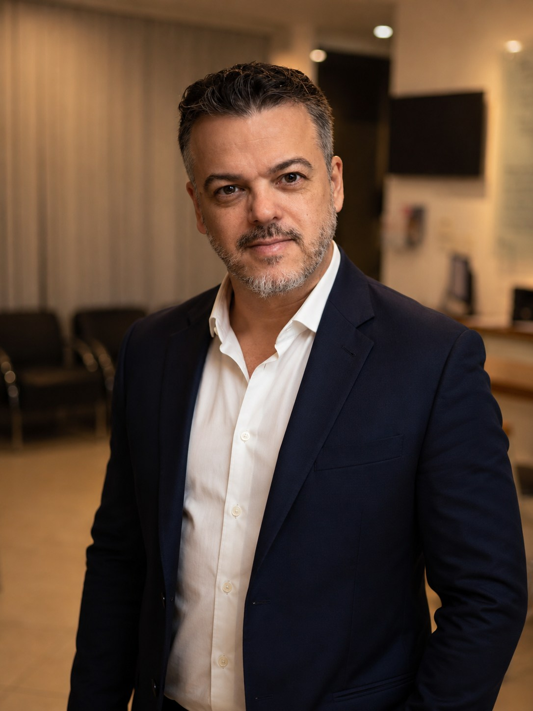

Psicanálise Clínica
Escuta do sujeito a partir de sua história, seus vínculos e seu inconsciente, trabalhando com adultos, adolescentes e crianças em processos de autoconhecimento e ressignificação.
Prática em psicanálise clínica e em consultoria organizacional, orientada à compreensão da história do sujeito, à ressignificação de experiências e à estruturação de processos, individuais ou institucionais, mais consistentes e sustentáveis.
Mais de 23 anos de atuação em clínica privada, gestão de equipes e desenvolvimento organizacional.

Psicólogo e Psicanalista Clínico · Consultor Organizacional · CRP 06/92454-SP
Psicólogo clínico e psicanalista com mais de 23 anos de experiência, em atuação desde 2004. Proprietário e Diretor Geral do Centro Clínico Campolim, em Sorocaba, onde exerce a responsabilidade técnica de sua clínica de Psicologia e Psicanálise clínica.
A prática se apoia na premissa de que toda história, individual ou institucional, requer escuta qualificada, presença e método. A atuação se organiza em duas frentes complementares: o cuidado psíquico individual, pela via da psicanálise, e a análise dos processos e das relações de trabalho nas organizações, pela via da consultoria em Recursos Humanos.
A trajetória consolidou um perfil analítico, estratégico e orientado a resultados, tanto na escuta clínica de crianças, adolescentes e adultos quanto na estruturação de áreas de Recursos Humanos, em treinamentos corporativos e em processos seletivos.
A prática psicanalítica é respaldada por formação sólida e mais de duas décadas de escuta clínica.
Escuta do sujeito a partir de sua história, seus vínculos e seu inconsciente, trabalhando com adultos, adolescentes e crianças em processos de autoconhecimento e ressignificação.
Processo clínico de 8 sessões para adolescentes a partir de 15 anos, unindo análise de perfil, estudo de cursos e universidades e leitura do mercado de trabalho.
Análise das relações entre sujeito, trabalho e organização, aplicada ao desenvolvimento do Manual de Estruturação Organizacional, com descrição de cargos, checklist de atividades e políticas internas. Ver detalhamento
Uso de informação qualificada sobre saúde mental como ferramenta de prevenção, autoconhecimento e fortalecimento de recursos internos saudáveis.
A escuta psicanalítica contempla diferentes fases do desenvolvimento e distintas dimensões da experiência subjetiva. O atendimento abrange todas as queixas clínicas, sem restrição. Relacionam-se abaixo algumas delas:
Escuta da história de vida e dos impasses do presente.
Espaço próprio para o tempo da individuação.
O trabalho com adolescentes considera a aliança terapêutica entre jovem, família e analista, e respeita o processo de individuação característico dessa fase do desenvolvimento, sem adoção de perspectiva patologizante.
Processo lúdico, adaptado à linguagem da infância.
O trabalho compreende orientação direta aos pais, com estratégias de aplicação no ambiente doméstico, e o emprego do jogo lúdico como via de análise e de intervenção sobre o sofrimento psíquico da criança.
Serviço voltado à estruturação organizacional. A atuação em Recursos Humanos acumula mais de 15 anos, com passagens por consultorias, empresas e organizações do terceiro setor.
O Manual de Estruturação Organizacional é desenvolvido de forma personalizada, a partir da análise da cultura, da missão, da visão e dos valores da empresa. O documento reúne a descrição completa de todos os cargos, com responsabilidades, competências e checklist das atividades organizado em ordem cronológica, do que resulta maior clareza nas funções, padronização dos processos e facilitação da integração e do treinamento dos colaboradores.
O material incorpora ainda um conjunto de Políticas Internas, o que contribui para uma gestão mais organizada, alinhada e segura. O serviço contempla atualizações e adaptações do manual sempre que necessário, de modo a acompanhar o crescimento e as mudanças da organização, constituindo instrumento estratégico para o fortalecimento da cultura organizacional e para o aumento da eficiência da gestão.

Atendimento presencial no Centro Clínico Campolim, Av. Mário Campolim, 560, Parque Campolim.
Atendimento por videochamada, com os mesmos parâmetros técnicos e de sigilo aplicados à modalidade presencial.
Consultoria em Recursos Humanos e treinamentos corporativos, em modalidade presencial ou remota, conforme a demanda da organização.
Corpo, afeto, cognição e comportamento operam de modo interdependente. A escuta psicanalítica atua sobre essas diferentes camadas da experiência, em etapas sucessivas e articuladas.
Acolhimento da queixa e mapeamento da história de vida.
O processo analítico permite que conteúdos inconscientes ganhem palavra e sentido.
Experiências e marcas emocionais são revisitadas sob nova perspectiva.
Ampliação da capacidade do sujeito de manejar a própria vida psíquica.
Descrição da porta de entrada e dos formatos de acompanhamento disponíveis.
Escuta qualificada da queixa e definição conjunta do formato de acompanhamento mais indicado, entre o processo psicanalítico continuado, a orientação vocacional profissional e o atendimento a crianças e adolescentes. Constitui a etapa inicial de todo encaminhamento clínico.
Destinado a adolescentes a partir de 15 anos de idade, consiste em processo clínico de orientação profissional estruturado em 8 sessões, no qual se procede à análise clínica do perfil do sujeito, ao exame das grades curriculares das universidades e à avaliação da cidade em que se pretende cursar o ensino superior.
Aos estudos clínicos e sociais soma-se a análise do mercado de trabalho e dos programas de pós-graduação na área pretendida. O procedimento resulta em orientação vocacional completa, fundamentada no contexto psico-socioeconômico do sujeito.
Acompanhamento de médio a longo prazo, com frequência semanal, voltado à elaboração profunda da história do sujeito e à construção de autonomia psíquica.
Processo que inclui, quando pertinente, orientação aos pais e responsáveis, respeitando o sigilo e a autonomia do adolescente.
Processo lúdico e adaptado à linguagem da criança, com participação da família no acompanhamento e orientação de pais.
Trabalho direto com os pais, mediante orientação e intervenção por meio de estratégias destinadas à aplicação por eles próprios, com a finalidade de qualificar e potencializar o tratamento conduzido com os filhos.
Processo de RPG Terapia, no qual o jogo lúdico opera como eixo de análise e de intervenção direta sobre o sofrimento psíquico da criança, favorecendo a condução do processo e a remissão das queixas.
O agendamento da Sessão de Avaliação Inicial permite a definição conjunta da modalidade de acompanhamento mais adequada ao caso. Há atendimento a todos os planos de saúde pelo sistema de reembolso.
O trabalho é conduzido com método, responsabilidade técnica e respeito à singularidade de cada história.
“Escutar é o primeiro ato de cuidado.”
Direção executiva e responsabilidade técnica de clínica de Psicologia e Psicanálise. Atendimento clínico psicanalítico a crianças, adolescentes e adultos. Gestão de equipe clínica e processos operacionais.
Macro gerenciamento e coordenação estratégica de equipes em ambiente de startup. Criação e estruturação de processos operacionais.
Supervisão e gerenciamento de psicólogos. Responsabilidade técnica pelo funcionamento clínico da unidade.
Elaboração e aplicação de cursos e palestras para colaboradores e diretores de empresas.
Consultoria e gerenciamento de cursos e treinamentos corporativos. Análise de clima e cultura empresarial, descrição de cargos, recrutamento e seleção.
Seção reservada a depoimentos de pacientes e de organizações atendidas, publicados mediante autorização prévia e com preservação integral do sigilo profissional.
Eu estava em uma situação péssima quando fui levado até o Dr. José. Eu estava em um relacionamento tóxico e havia tentado suicídio.
No começo eu achava que era besteira esse tipo de coisa, como muita gente acha, mas aos poucos fui me abrindo e deixando o Dr. fazer seu trabalho. De pouco em pouco fui tendo uma transformação em sentimentos e pensamentos. No início demorei a perceber a mudança, mas quando notei, ela já era enorme. Coisas que antes me afetavam passaram a não ter tanto poder sobre mim, pessoas que me feriam já não me feriam mais, aprendi a me colocar no lugar que mereço, sem deixar que situações ou pessoas me tirassem de lá.
Hoje tenho uma vida diferente, tenho mais autonomia, poder sobre situações que antes tinham poder sobre mim, estou no controle do que antes me feria. Claro que ainda tenho muito a melhorar como profissional e humano, mas graças ao Dr. José Simão Neto já sou uma versão muito melhor do que fui um dia.
Os atendimentos presenciais acontecem no Centro Clínico Campolim, em Sorocaba, clínica de Psicologia e Psicanálise da qual José Simão Neto é proprietário, diretor geral e responsável técnico desde 2008.
O contato inicial pode ser realizado por qualquer um dos canais abaixo, para agendamento ou para esclarecimento de dúvidas sobre o processo clínico e sobre a consultoria organizacional.